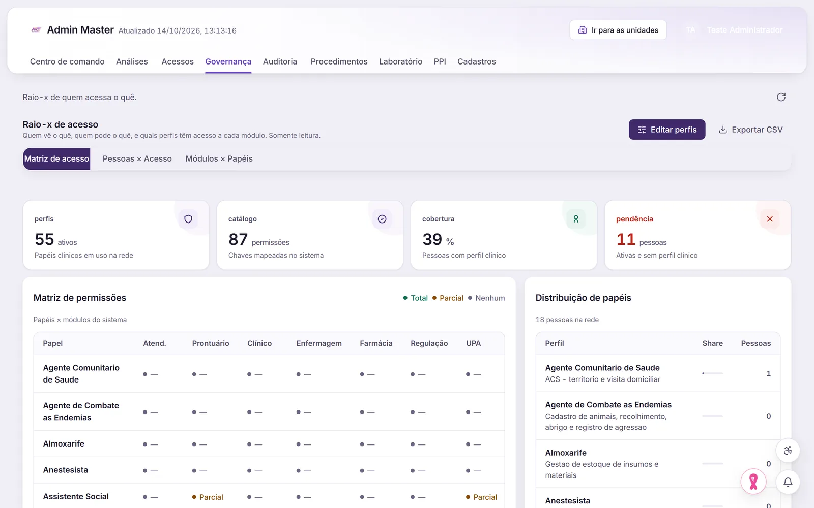

Usuários e unidades
Criar, editar e ativar usuários, e vincular a mesma pessoa a mais de uma unidade.
Administração e pessoas
Usuários, unidades, papéis e permissões num só lugar, com o acesso conferido no servidor. E a gestão de pessoas na mesma plataforma.

O que a administração faz
Criar, editar e ativar usuários, e vincular a mesma pessoa a mais de uma unidade.
Acesso definido por usuário e por papel. A regra é conferida no servidor, não só escondida na tela.
Matriz de permissões editável para cada papel, como recepção, enfermagem ou médico.
O Admin Master cria e edita unidades, nomeia os admins de cada uma e acompanha conexões e presença.
Avisos com imagem para as equipes e lista de aniversariantes.
Importação e conciliação dos dados do SCNES.
Gestão de pessoas
Em preparação: assinatura digital com gov.br e ICP-Brasil, que depende de credencial.
Como funciona
Numa demonstração com dados fictícios, criamos um usuário, damos o papel e mostramos o ponto registrado pelo celular.